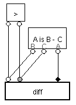

A clause is a self-contained diagram of Visual Prolog. There are two types of clauses: facts and rules.
Facts
The head of a Visual Prolog clause is drawn as a thick-bordered rectangle, inside of which is drawn the head's name. The head may have any number of slots, which are positioned on the border of the head. A fact asserts the truth of a relationship between the values of its slots. Slots are given value by connecting them to other objects. In the example below, the slot of the head is connected to an atom, a primitive unit of value.
Figure 3.1. Corresponding Prolog: female(nancy).
Thus, the fact means that the relation female is true of Nancy.
Figure 3.2. Corresponding Prolog: parent(nancy,david).
This fact means that the relation parent is true between Nancy and David. Note that the two slots are shaped differently. In this case, the diamond slot is connected to the parent, and the circle to the child. The meanings of slot shapes are up to the programmer, but must be consistent among all identically-named instances of the fact with the same number of slots.
It is useful to be able to aggregate value into lists. A list is drawn as a horizontal series of squares, each of which may be connected to other objects. The value of the whole list may be obtained by connecting to the list's list bracket.
Figure 3.3. countries_visited(david,[england, germany, spain]).
The fact of figure 3.3 asserts that the relation countries visited holds between David and the list England, Germany, Spain.
It is also useful to be able to aggregate value into structures. A structure, like a list, is drawn as a horizontal series of squares. The squares are enclosed in a rectangle, and the name of the structure, its functor, is drawn within. Generally, each position in a structure has a specific meaning which is up to the programmer.
Figure 3.4. birthday(david,date(2,march,1973)).
Rules
The other kind of clause is a rule. A rule, like a fact, asserts the truth of a relationship between the values of its slots. The difference is that the truth of a rule may also depend on any number of goals. A goal is drawn as a rectangle, inside of which is drawn the goal's name. A goal may have any number of slots positioned its border. A goal is true if:
Figure 3.5. parent(walter,X) :- parent(nancy,X).
This rule asserts that Walter is a parent of a person if Nancy is also a parent of that person. Notice that it does not say anything about the consequences of Walter being a parent of a person. It simply specifies that whenever it is true that Nancy is a parent of a person (the goal), it is also true that Walter is a parent of that person (the head).
Figure 3.6. mother(X,Y) :- female(X), parent(X,Y).
The rule in figure 3.6 has two goals. It says that whenever a person who is female is the parent of a child, the female person is also a mother of the child. Note that a direct connection from the slot of "female" to the diamond slot of "parent" is unneccessary because they are effectively connected through the diamond slot of "mother."
When clauses become more complicated, it is often impossible to directly connect objects in a visually pleasing way. In such cases it is appropriate to use a variable. Variables have no value of their own; they are used only to bring together the values of the objects they are connected to.
The meaning of a complicated clause may be clarified by the use of labels. Labels do not affect the meaning of a clause.
Figure 3.7. mother(Mother, Child) :- female(Mother), parent(Mother, Child).
The clause of figure 3.7 is particularly interesting because it is recursive Ð the truth of the parent relation depends on the truth of the parent relation (with different slot values). Recursive clauses are particularly powerful when they have more than one goal.
Figure 3.8.
ancestor(X,Y) :- parent(X,Z), ancestor(Z,Y).ancestor(X,Y) :- parent(X,Y).
Two clauses are depicted in figure 3.8. The first says that the ancestor relation holds between two people whenever the parent relation holds. The second says that, if the ancestor relation holds between an ancestor and a descendant, then the parent of the ancestor is also an ancestor of the descendant.
Recursive relations may be defined on compound data types, such as lists and structures. For instance, let us consider the relation that holds between a list and a member of the list. One way to express this relation is as follows. An element is a member of a list l if:

Figure 3.9. member(X,[X|_]). member(X,[_|T]) :- member(X,T).
Figure 3.9 features a list with a tail. The tail represents all the elements of the list that are not shown. So, in the above example, the tail represents the list with the first element removed.
Often it is necessary to represent a list with no elements. This is accomplished with the empty-list, which is drawn as a crossed square. The empty-list is very useful for defining recursive relations on lists.
Figure 3.10. conc([],B,B). conc([A|As],Bs,[A|Rest]) :- conc(As,Bs,Rest).
Note that arrow slots are identified by their inward- or outward-pointing direction.
The two clauses of figure 3.10 define the conc relation, which holds between two lists and their concatenation. The first clause says that an empty list concatenated with a list produces the list. The second clause says that the result of concatenating two lists is the list that:
Occasionally, particularly when defining arithmetic relations, it will be desired to inject some textual Prolog into a clause. This is accomplished by means of a formula goal. Formulas look and act just like ordinary goals, except that their slots are identified by letters rather than shapes. A one-slot formula's slot will always be labeled "A," a two-slot formula's slots "A" and "B," and so on. Inside the formula should be a Prolog goal in which the only unbound variables are the ones named by the slots.

Figure 3.11.
diff(A,B,C) :- A "=<" B, A is C - B.diff(A,B,C) :- A > B, A is B - C.
Figure 3.12.
factorial(F,X) :-
F>0, -(F,1,F1), factorial(F1,F1F), *(F,F1F,X).factorial(0,1).
As the definition of "factorial" shows, arithmetic clauses need not use formulas, but the use of such does contribute to readability.
Figure 3.13.
ancestor(X,Y) :- parent(X,Y).ancestor(X,Y) :- parent(X,Y), ancestor(Y,Z).
The clauses depicted in figure 3.13 are potentially dangerous. Ultimately, clauses are interpreted by the computer, which tries to prove the truth of relations specified by the user. If the user asks the computer to prove the truth of the ancestor relation, the computer proceeds as follows: